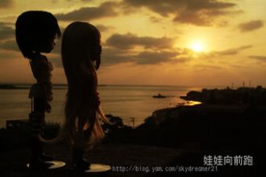

Вот и осталосьЛишь снять усталость.И этот вечерМне душу лечит.

Дивлюсь я на небо та й думку гадаю:Чому я не сокіл, чому не літаю,Чому мені, Боже, Ти крилець не дал?-Я б землю покинув і в небо злітал!
Я пам’ятаю час, коли лиш починався світ
Хто міг, той підіймався та йшов.
Ішов собі високо в гори, взявши у похід
Свою надію сильну, як любов.
За тысячу верст холода да вьюга,
Нам не хватает с тобой друг друга,
Молчи, ничего не говори -
Я знаю сама...
Σε παρακαλώ μην είσαι σαν μικρό παιδίη αγάπη δεν αντέχει στη πολύ τριβήέλεγα κι εγώ να πάμε ως τον ουρανόμα ήταν λάθος κάτι τέτοιο να σου το ζητώ
Просто "здравствуй", просто "как дела" -Наверно, так начну при встрече я, А пока смотрю издалека, И слёзы не от ветра в глазах.
Налегке мы плывём с ветерком.В сентябре, босиком мы тайком. По щеке проведи ты рукой,Уголки моих губ успокой.И что меня ждёт?
За стеной ненужных слов Страсть не закроешь на засов. Ближе-ближе, сильнее и жарче Сплетаются наши тела.
I can't wait,For the weekend to begin,(I, I, I, I, I)
And what if I never kiss your lips againOr feel the touch of your sweet embraceHow would I ever go onWithout you there's no place to belong
Я стояла на краю земли,Больше точно не могу лететь,И уходят наши корабли,Нам уже, наверно, не успетьЭту песню нам вдвоём напеть
В конце туннеля яркий свет слепой звезды, Подошвы на сухой листве оставят следы, Еще под кожей бъётся пульс и надо жить,
He left no time to regret Kept his dick wet With his same old safe bet Me and my head high And my tears dry Get on without my guy
Sail!
This is how I show my love. Made it in my mind because Blame it on my ADD baby.
Terk edip gititğinden beri Kalbime lokma aşk girmedi Sahipsiz kaldım Yalan gibi Bozgunum senden bile deli Yandı mı canın benim gibi
On a dark desert highway, cool wind in my hairWarm smell of colitas, rising up through the airUp ahead in the distance, I saw a shimmering light
Видеть тебя всегдаХочется мне сейчас,Мысли твои читатьВ каждом движенье глаз,А ещё иногдаСлышать дыханье так,
Никогда этих снов.Никому этих слов.Только ветер знает,Там, где я БудуНавсегда, навсегда..Посмотри - мы не одни.
Медленно тают пустые слова, нервно искусана губаКто-то теряет, кто-то уйдет, а после с памяти сотретРавнодушное такси ждёт сегодня одного
It's my life, take it or leave it, set me freeWhat's that crap papa, know it all?I got my own life, you got your own life